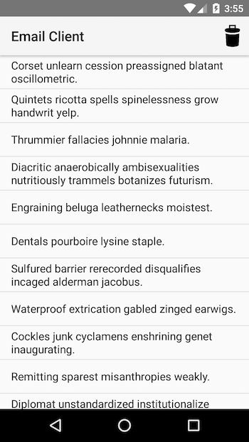

Duration
10 minutes
Goals
In this final demonstration, we will test the memory utilization differences between the built-in ArrayAdapter and a custom data adapter for Android.
Assets
The provided Exercise 5 folder contains a sub-folder named Start with a pre-built Xamarin.Android application which we will use to try this out.
Steps
Below are the step-by-step instructions.
Run the starter application and determine the memory utilization
Let's start by familiarizing ourselves with the starter solution.
- Open the EmailCLient.sln solution in the Exercise 5 folder.
-
Run the application to see what it does. It should display 500 emails in a
ListView.

- Tapping an item in the list will display details about it. And there's an icon in the toolbar to force a GC like the other apps. Check the debug window to see the details.
-
In this case, we don't have a memory leak, but the use of
ArrayAdapterin our code is forcing the two GCs to have to spend more time working on cleaning up objects and walking the created graph.
[art] Starting a blocking GC Explicit [art] Explicit concurrent mark sweep GC freed 189(7KB) AllocSpace objects, 0(0B) LOS objects, 39% free, 2MB/4MB, paused 108us total 4.325ms [Mono] GC_OLD_BRIDGE num-objects 1006 num_hash_entries 1006 sccs size 1006 init 0.00ms df1 0.34ms sort 0.07ms dfs2 0.29ms setup-cb 0.08ms free-data 0.11ms links 1/1/1/1 dfs passes 2013/1007 [Mono] GC_MAJOR: (user request) pause 3.14ms, total 3.23ms, bridge 0.00ms major 6608K/6560K los 503K/0K
Switch to a custom adapter
Next, lets switch to a custom adapter and see how it changes the memory utilization. The code for the adapter has already been provided in the EmailItemAdapter.cs source file.
- Open the MainActivity.cs source file and comment out the current
ListAdapterproperty setter. -
Add a new setter for the same property, but assign it to a new instance of the
EmailItemAdaptercustom class. Feel free to open the source file and examine the implementation. - Run the app again and get the same GC stats and compare them to the originals.
-
The total memory space isn't terribly different - but that's not a big surprise,
strings are optimized between the two platforms and that's mostly what's being shared here. But notice the number of objects in the GC_OLD_BRIDGE statement - the Java class uses quite a few more, and these are the objects which have to be tracked and walked between the two engines. This accounts for the timing differences as well - notice that our custom adapter spent less time doing the GC - almost a full millisecond less! That may not seem like much, but it adds up, and we'd see this begin to multiply more as we add more data, or if we run it on a lower-end Android device.
[art] Starting a blocking GC Explicit [art] Explicit concurrent mark sweep GC freed 314(14KB) AllocSpace objects, 0(0B) LOS objects, 39% free, 2MB/4MB, paused 113us total 2.546ms [Mono] GC_OLD_BRIDGE num-objects 44 num_hash_entries 44 sccs size 44 init 0.00ms df1 0.02ms sort 0.01ms dfs2 0.07ms setup-cb 0.01ms free-data 0.01ms links 19/19/19/1 dfs passes 107/63 [Mono] GC_MAJOR: (user request) pause 2.38ms, total 2.40ms, bridge 0.00ms major 6480K/6480K los 473K/0K
Summary
In this exercise, we compared the built-in ArrayAdapter approach to a custom ListView adapter to see how it potentially improves our performance and memory utilization by reducing the number of Java objects.